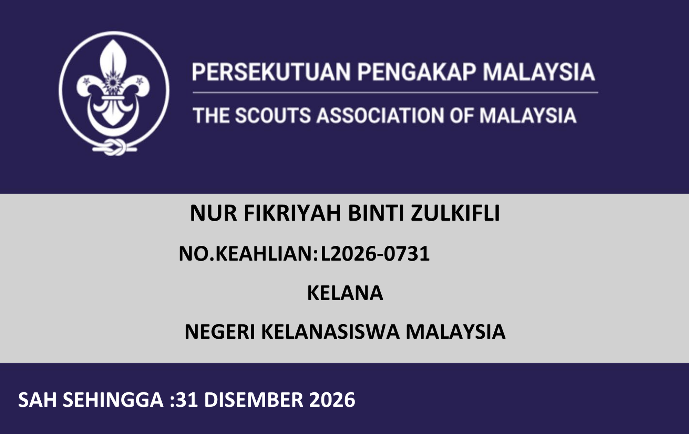
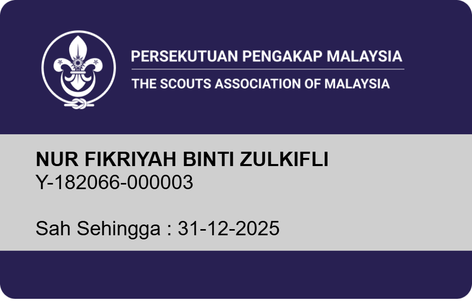

No. Kad Pengenalan
060428-09-0014
No. Matrik Pelajar
18DCS24F1025
Unit & Skim
KELANA (ROVER)
Maklumat Institusi & Kumpulan
Politeknik Tuanku Syed Sirajuddin (PTSS)
Arau, Perlis
Kelanasiswa Malaysia
Rekod & Kad Keahlian Pengakap
Nombor pendaftaran tahunan serta imej kad keahlian Persekutuan Pengakap Malaysia
Didaftarkan di bawah Kelanasiswa Malaysia (KSM PTSS).

Didaftarkan di bawah Kelanasiswa Malaysia (KSM PTSS).

Didaftarkan di bawah Kelanasiswa Malaysia (KSM PTSS).
Road Map ke Arah Anugerah Baden Powell (BPA)
Modul Kemahiran & Lencana Kelana
Pilih pautan lencana untuk membuka sukatan modul dan rekod kemahiran anda
Lencana Keahlian
Persetiaan, Undang-undang, Sejarah & Dasar Pengakap.
Lencana Perkhidmatan
Bantu mula, kebajikan komuniti & khidmat masyarakat.
Lencana Pengembaraan
Ekspedisi jalan kaki/berbasikal, orienteering & ikhtiar hidup.
Lencana Kemahiran
Simpulan & ikatan, pioneering, isyarat & perkhemahan.
Lencana Kepimpinan
Pengurusan krew, mesyuarat, protokol & pentadbiran.